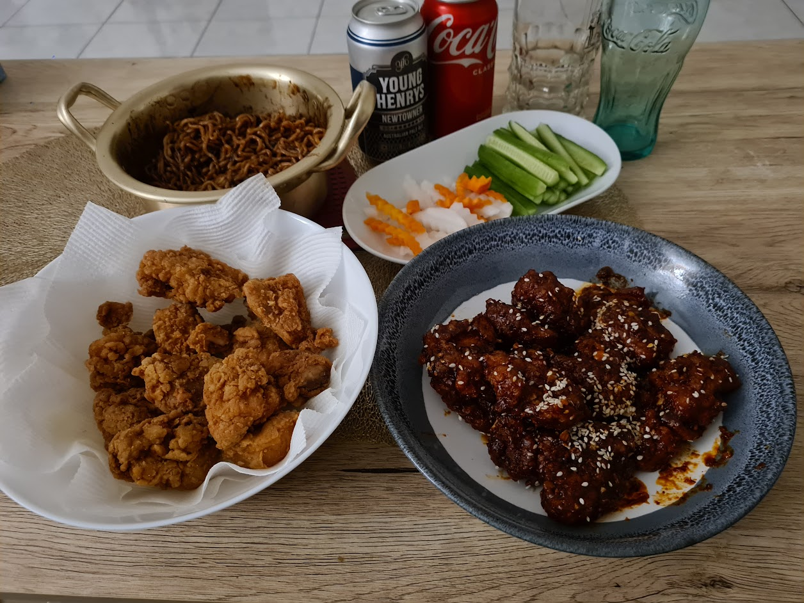

Korean Fried Chicken

Home
Simple fried chicken thats normally made in korea and always best served with beer.
Ingredients
- Boneless chicken(thigh) - 500-600 grams
- Frying chicken mix powder(Korean brand if possible) - 1.5 cups
- Cold water - 1.5 cups
- Salt - 1 tsp
- Black pepper
- Minced Garlic - 1/2 tsp
- Vinegar(Any type of white wine vinegar)
Prep The Chicken
- Get your chicken and frying chicken powder list.
- Cut the chicken to bite size pieces and put them in a bowl.
- Add 1tsp of salt, black pepper and 1/2tsp of minced garlic.
- Put 1tsp of vinegar and massage the chicken gently.
- Microwave the chicken for 30-60 seconds (Careful to not cook the surface of the chicken.)
Batter The Chicken
- Get a bowl then mix both the frying chicken powder & water in the ratio of 1:1 which you now have a batter.
- Now get the chicken and start dipping them into the batter one by one.
- Bring out a wider container and pour some frying powder evenly into it then put the dipped chicken on top of it.
- Pour some more powder on top of the dipped chicken, close the container lid and shake it like your life depends on it.
Fry The Chicken
- Prep the oil on the wok to a high temperature. To test when the best time to put the chicken in, take of a piece of batter from the container and put it into the oil. If it floats after 3 second it's ready.
- Now place all the chickens into the oil and let it cook til golden brown (est 10-12 minutes) then take it out.
- Double fry the chicken again on medium heat (est 8 minutes). This is make sure the chicken is properly cooked and crispy.
- Just check one of the chicken by cutting it to make sure its cooked inside.
That thats all done and enjoy your meal.
Home